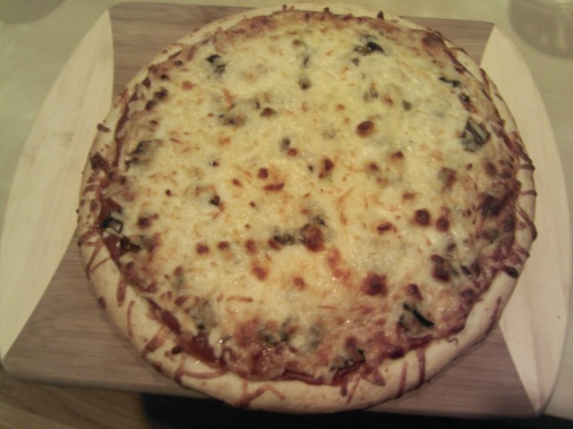

Joe K.: My Bio
Childhood:
I was born in Chicago, IL, but grew up in Newton, MA. I have two sisters, one who is now
a teacher in Cambridge, MA and another who is a lawyer in San Diego, CA.
My father is a lawyer, and my mother is an artist. I also had a dog named Jack.
When I was a kid, I loved Track & Field.
Education:
Here are some places I went to School:
Working life:
I have worked many different jobs in my life:
- Seafood Clerk at Bread & Circus
- Research Assistant at Dartmouth's Thayer Engineering School
- Intern at Lutron Electronics
- Teaching Assistant at UMass Boston
- Software Developer at RSA Security
- Cashier and Assistant Manager at Whole Foods
- Genius at Apple Inc.
- Operations Assistant at the Cambridge Innovation Center
Hobbies:
I like to watch movies, read and cook.
Here is a pizza I baked once:

Current:
I am currently enrolled in the Web Application Development
certificate program at BU's Metropolitan College. I hope to become
proficient in HTML5, CSS, Javascript and more!
I am also learning about github.
Homework 2, part 1:
Homework 2, part 2: